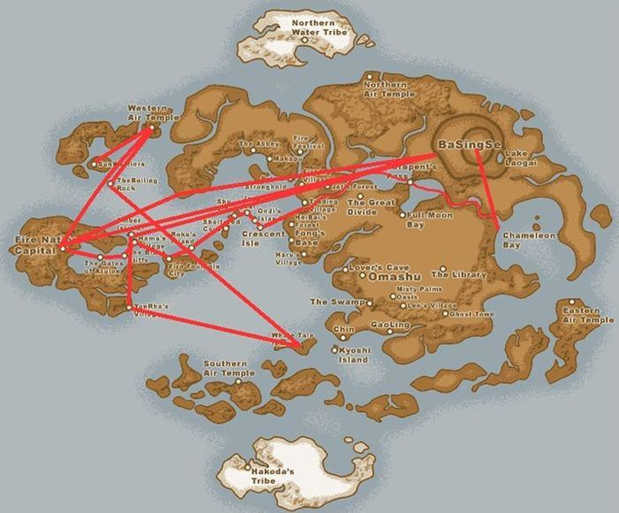

In the third season of Avatar: the Last Airbender, Aang and his friends attempt to attack the Fire Nation, and end up unsuccessful. Zuko and Iroh become Aang's allies, and Zuko begins to teach Aang firebending. Meanwhile, Aang struggles with the idea of killing Fire Lord Ozai. During the final battle, Aang manages to strip Ozai of his powers his friends capture Azula. After the war, Zuko is crowned Fire Lord and the war comes to an end.
Fire Nation
Team Avatar's Journey
Episodes
01 - The Awakening
After being in a coma for a few weeks, Aang wakes up on a Fire Nation ship, where he finds him and his friends disguised as Fire Nation citizens. Meanwhile, Zuko returns home with Azula and restores his honor.
02 - The Headband
Mistaken as a Fire Nation child, Aang is forced to enroll in a Fire Nation school, where he becomes known for the headband he uses to cover his airbending tattoos. Meanwhile, Zuko confronts Iroh, who has become a Fire Nation prisoner, and hires someone to chase down Aang.
03 - The Painted Lady
When the group arrives at a starving fishing village, Katara disguises herself as a helpful spirit known as 'The Painted Lady'.
04 - Sokka's Master
As the only non-bender of Team Avatar, Sokka feels out of place and unhelpful. He travels to a swordsmaster, who teaches him swordfighting techniques. His skill is acknowleged after he is allowed to make his own sword out of meteorite.
05 - The Beach
Azula, Ty Lee, Mai, and Zuko go on a trip to a beach house. They attend an ordinary party, and become awkward and frustrated with each other as they attempt to fit in. Meanwhile, Team Avatar is chased by 'Combustion Man', the person hired by Zuko to chase down Aang.
06 - The Avatar and the Fire Lord
Aang and Zuko are taken on parallel adventures as Aang learns about his predecessor, Avatar Roku, and Zuko learns about his grandfather, Firelord Sozin. Roku and Sozin were best friends, who eventually parted ways after Roku became opposed to Sozin's desire to take over the world.
07 - The Runaway
Toph finds a way to make money by outsmarting gambiling conmen within the town. After Katara expresses her disapproval, the group is stuck in a conflict which leaves them vulnerable to the attacks of the relentless Combustion Man.
08 - The Puppet Master
Team Avatar finds themselves in a mysterious town where people have been disappearing. There, they meet an old waterbender named Hama, who teaches Katara how to bloodbend. Although Katara is repulsed, she was forced to bloodbend in order to defeat Hama and rescue her prisoners.
09 - Nightmares and Daydreams
Team Avatar arrives at the rendesvous point for the invasion four days ahead of schedule. Aang becomes extremely anxious about the upcoming invasion, and is unable to sleep, resulting in nightmares and delusions.
10 - The Day of Black Sun, Part 1: The Invasion
Team Avatar meets up with some old friends as the invasion force gathers in preparation to attack the Firelord. However, they soon learn that the Fire Nation was expecting this invasion, and the Firelord has already been moved to a different place.
11 - The Day of Black Sun, Part 2: The Eclipse
The eclipse has officially begun, and Team Avatar is rushing to find Firelord Ozai and defeat him before the eclipse is over. However, when they make it to the underground bunker, they find Azula instead. Meanwhile, Zuko confronts his father and learns about his mother's banishment from the Fire Nation.
12 - The Western Air Temple
After failing the invasion, Team Avatar seeks shelter at the Western Air Temple, where they run into Zuko. Instead of hoping to capture them however, Zuko seeks to join their team and teach Aang firebending.
13 - The Firebending Masters
Since Zuko no longer draws his firebending power from rage and his desire to capture Aang, his firebending grows week. Him and Aang travel to the 'Sun Warrior Ruins,' where they hope to learn firebending from the original masters -- dragons.
14 - The Boiling Rock, Part 1
Hoping to win Team Avatar's favor, Zuko helps Sokka break into the Fire Nation's most secure prison -- the Boiling Rock -- in order to save Sokka's father. There, they run into Suki and a few other prisoners. Together, the group hatches an escape plan.
15 - The Boiling Rock, Part 2
Zuko, Suki, Sokka, and his father Hakoda, attempt to escape the Boiling Rock, but their plan is complicated by the appearance of Azula and her friends. The group is able to escape after Mai turns on Azula, weakened by her feelings for Zuko.
16 - The Southern Raiders
This time, hoping to win favor with Katara, Zuko takes her to the man responsible for the Southern Water Tribe raid which led to her mother's death. Zuko persuades Katara not to use violence in order to take revenge.
17 - The Ember Island Players
Team Avatar, which now includes Zuko, attend a Fire Nation play about their own lives. Obviously unhappy with the inaccurate portrayals of themselves, tensions begin to arise within the group.
18 - Sozin's Comet, Part 1: The Phoenix King
Aang learns about Ozai's plan to burn down the Earth Kingdom with a fleet of airships, and becomes conflicted at the prospect of having to kill Ozai. While searching for a solution, he sleepwalks onto a mysterious moving island, and his friends ask June to track him down. Meanwhile, Ozai crowns himself "Phoenix King."
19 - Sozin's Comet, Part 2: The Old Masters
Since June can't find Aang, Team Avatar asks her to find Iroh instead, who is residing at a camp with the old masters that Team Avatar has met along the way. There, Iroh suggests that Zuko challenges Azula for the title of Firelord with Katara's help.
20 - Sozin's Comet, Part 3: Into the Inferno
Now separated, Sokka, Toph, and Suki work to destroy the Fire Nation's airship fleet while Zuko, with Katara's support, challenges Azula to an official duel known as an Agni Kai. Aang struggles in his battle against Ozai, as his reluctance to kill him has made him hesitant. Meanwhile, Zuko is injured by Azula's lightning while protecting Katara.
21 - Sozin's Comet, Part 4: Avatar Aang
Azula grows insane as Katara defeats her and heals Zuko. Sokka, Toph, and Suki succeed in destroying the airship fleet, and Aang manages to defeat Ozai without killing him by taking away Ozai's bending abilities. After the war, Zuko is crowned Firelord, Aang and Katara confess their feelings for each other, and the world enters a new age of hope.